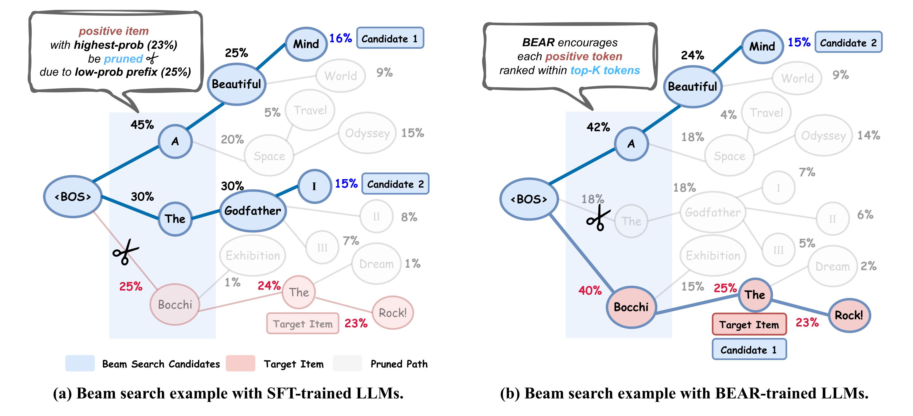
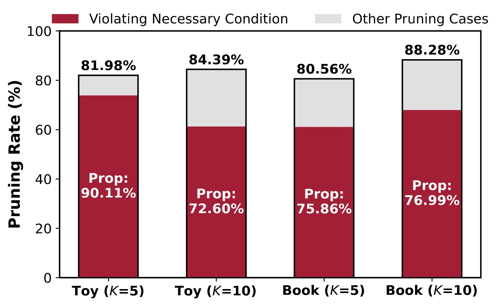
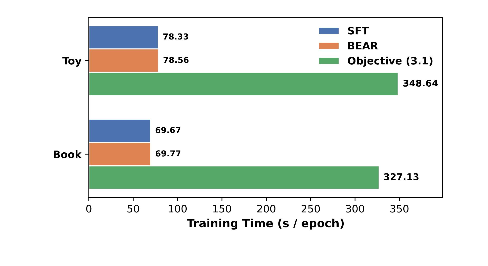
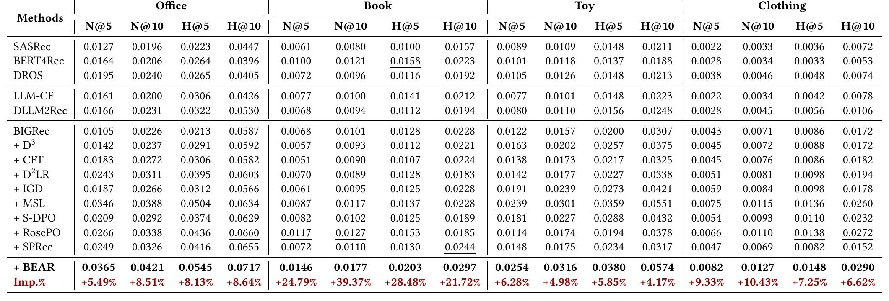
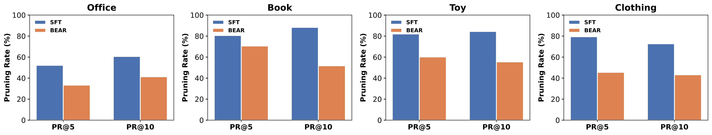
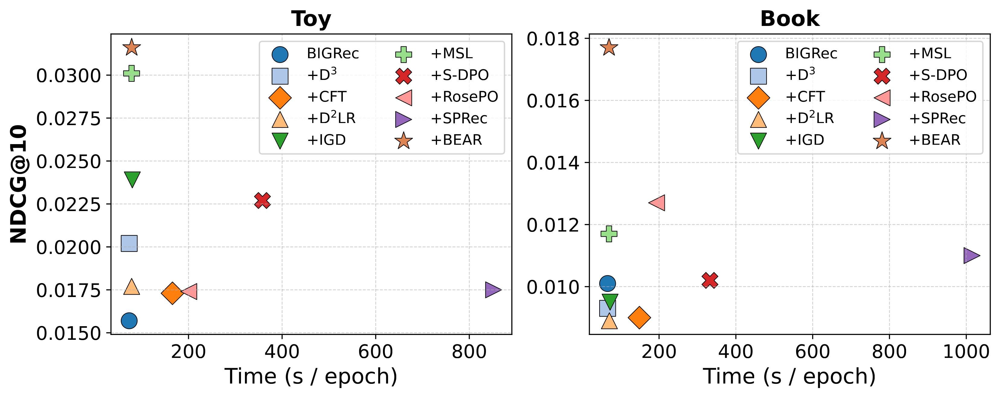

BEAR：让 LLM 推荐训练真正感知 beam search 的剪枝风险
这篇 SIGIR 2026 论文《BEAR: Towards Beam-Search-Aware Optimization for Recommendation with Large Language Models》来自浙江大学，一作 Weiqin Yang，合作机构包括香港中文大学（深圳）、杭州城市学院等；论文入口是 arXiv:2601.22925。论文提出 BEAR，也就是 Beam-SEarch-Aware Regularization，用一个不需要完整模拟 beam search 的正则项缓解 LLM 推荐中的训练-推理不一致；作者公开了 BEAR-SIGIR-2026 代码仓库。阅读重点是：SFT 明明在最大化正样本 item 的整体概率，为什么 beam search 推理时仍会把这个 item 过早剪掉；BEAR 又如何把“beam 里能不能活下来”转成训练阶段可优化的 token-level 约束。
LLM 推荐里常见的 SFT 只关心正样本完整 item 的总体概率，但线上推理通常用 beam search 逐 token 保留少量高概率前缀；只要正样本某个前缀或某个 token 在局部竞争中掉出 beam，它即使最终整体概率最高，也不会进入候选集。BEAR 要解决的就是这种目标函数与解码算法之间的错位。
1. 背景和问题
LLM-based recommender systems 的基本做法，是把用户历史交互写成自然语言或半结构化 prompt，让大语言模型生成下一个可能感兴趣的 item 文本。相比传统 ID embedding 或序列推荐模型，这条路线的吸引力在于 LLM 可以理解 item 标题、属性、语义关系和用户上下文，从而在冷启动、长文本 item、多领域推荐或可解释推荐中带来更强语义泛化。论文把这个过程拆成三步：先把用户历史构造成 prompt；再用 SFT 把 prompt 与真实点击 item 配对训练；最后在推理阶段用解码策略生成 top-\(K\) 推荐。这个描述看似与普通生成任务一致，但推荐系统有一个很特殊的点：最终需要的是高精度 top-\(K\) item 列表，而不是一段自由文本。
在 LLM 推荐中，item 往往不是一个单 token，而是由多个 subword token 组成的文本序列。模型对 item \(y\) 的概率会被分解为逐 token 条件概率的乘积：
符号解释：\(x\) 是由用户历史构造出的 prompt，\(y\) 是目标 item 的文本描述，\(y_t\) 是 item 的第 \(t\) 个 token，\(y_{\lt t}\) 是前缀，\(\theta\) 是 LLM 参数。这个分解意味着一个 item 能不能被生成，不只取决于完整序列概率，也取决于每一步局部 token 概率在所有候选 token 中的相对位置。SFT 的训练目标是最大化真实 item 的整体 likelihood，等价地最小化 token-level negative log likelihood：
符号解释：\(\mathcal{L}_{\textnormal{SFT}}\) 会把每个真实 token 的概率往上推；但它没有显式比较“这个 token 在 beam search 当前步是否进入 top-\(B\)”。因此，SFT 学到的是一个按完整 item 概率排序的模型，而推理阶段执行的是一个局部剪枝搜索过程。
beam search 的作用是避免枚举全部 item。若候选 item 集合巨大，直接计算每个 item 完整概率非常昂贵；beam search 只在每一步保留 beam width 为 \(B\) 的高概率前缀，再继续扩展这些前缀。它的优势是快，问题是贪心：某条前缀一旦在某一步落出前 \(B\)，对应的完整 item 就永远没有机会恢复。对生成式推荐来说，这个局部剪枝尤其危险，因为推荐 item 的文本前缀可能并不总是“热门词”或“高先验词”。一个完整概率很高的 item，可能因为第一 token 或中间 token 的局部概率稍低，在 beam search 中被提前剪掉。

Figure 1 用一个动画标题示例把这个问题讲清楚。左侧 SFT 场景中，正样本 item “Bocchi the Rock!” 的完整概率是 23%，在所有完整 item 中最高；但它的第一步前缀 “Bocchi” 概率只有 25%，低于 “A” 的 45% 和 “The” 的 30%。当 beam width \(B=2\) 时，beam search 只保留 “A” 和 “The”，于是 “Bocchi” 所在路径被剪掉，后续再高的完整概率也无法进入最终候选。右侧 BEAR 场景中，训练目标不再只盯完整 item likelihood，而是推动正样本每一步 token 都进入 top-\(B\) 局部候选，使 “Bocchi” 能在第一步存活，后续 “the Rock!” 才有机会组成最终候选。这个图的关键不是百分比本身，而是把推荐中的生成式解码问题从“完整路径分数”拆回“逐步生存权”。
论文真正想强调的是，这不是个别构造出来的反例，而是 LLM 推荐中普遍存在的训练-推理不一致。作者统计了正样本 item 在“完整概率已经排进 top-\(K\)”的情况下，是否仍被 beam search 剪掉。结果显示，在 Toy 与 Book 数据集上，大量正样本虽然按完整概率看应该进入推荐候选，却因为 beam search 中局部前缀不够强而被剪掉。论文在引言里给出的表述很直接：超过 80% 的高完整概率正样本可能在 beam search 过程中提前丢失。也就是说，SFT 并没有失败于“没有学到正样本整体概率”，而是失败于“整体概率高不等于每一步都能在局部竞争里活下来”。

Figure 4 进一步解释了 BEAR 为什么选择 token-level top-\(B\) 必要条件。图中红色部分表示错误剪枝中可归因于必要条件违反的比例，灰色是其他剪枝原因。无论 Toy 还是 Book，无论 \(K=5\) 还是 \(K=10\)，红色部分都占全部错剪案例的 70% 以上；图中 Prop 标注分别达到 90.11%、72.60%、75.86%、76.99%。这说明，虽然 beam search 的完整理论条件可能更复杂，但“正样本 token 在某一步掉出 top-\(B\) token 候选”已经解释了绝大多数错误剪枝。BEAR 的核心设计因此不是追求精确模拟 beam search，而是抓住最常见、最可优化、最便宜的错剪原因。
这篇论文放在推荐系统语境里，价值在于它把 LLM 推荐的一个推理算法细节提升到了训练目标层面。很多 LLM4Rec 方法关注 prompt 怎么写、item 文本怎么表达、用户序列怎么编码、SFT 或 DPO 怎么构造偏好样本；BEAR 则提醒我们，推荐最终常常不是用 teacher forcing 的完整概率排序，而是用 constrained beam search 生成合法 item。只要训练目标没有感知 beam search 的局部剪枝，离线训练 loss 降低和最终 top-\(K\) 推荐质量之间就会出现断裂。对工业推荐来说，这个问题非常现实：beam width 往往受延迟和内存限制，不可能无限放大；如果训练阶段不照顾 beam survival，推理阶段就会浪费大量概率质量在最终不可达的路径上。
2. 方法
2.1 任务形式化：LLM 推荐、SFT 目标与 beam search 解码对象
论文聚焦 sequential recommendation。给定用户集合 \(\mathcal{U}\) 和 item 集合 \(\mathcal{I}\)，用户 \(u\) 的历史交互序列写作 \(H_u=[h_1,h_2,\ldots,h_{N-1}]\)，目标是预测下一个 item \(h_N\)。在 LLM-based RS 中，历史 item 会被转成 prompt \(x\)，真实下一个 item 会被转成输出文本 \(y\)；item 不是单个类别 ID，而是多 token 文本，因此推荐概率天然被拆成逐 token 条件概率：
符号解释：\(P_{\theta}(y_t\mid y_{\lt t},x)\) 是在 prompt 与已生成前缀下输出第 \(t\) 个 item token 的概率，\(|y|\) 是 item 文本长度。这个形式化同时带来完整 item 排序与前缀局部排序两套竞争规则，完整 item 的分数由乘积 \(P_{\theta}(y\mid x)\) 决定，而 beam search 的中间状态由每一步前缀或下一 token 的局部概率决定。
SFT 的训练目标是最大化真实 item 的完整 likelihood，即最小化 teacher forcing 下的 token negative log likelihood；它在训练时非常高效，因为真实前缀已知，模型一次前向就能得到所有位置的 logits，但这个目标没有显式看到推理阶段的 beam 阈值：
符号解释：\(\mathcal{L}_{\textnormal{SFT}}\) 会提升每个真实 token 的概率，但训练时始终沿真实前缀计算 logits；推理时模型却在多个候选前缀之间做 beam search。BEAR 的核心机制就是把“真实 token 是否超过当前步第 \(B\) 名阈值”显式加入训练，而不是只让完整 item 概率变大。 这也是它和普通 token reweighting、entropy reweighting 或 DPO pairwise preference 的主要差异。
2.2 直接优化前缀生存：为什么理论自然但训练太贵
最直接的解法是训练时完整模拟 beam search，并要求正样本 item 的每个前缀都不要被剪掉。这相当于把推理时“能否留在 beam 里”的判断原封不动放回训练循环，让训练目标直接对齐候选路径的存活约束，而不再只优化完整 item 的概率，论文把这个前缀生存目标写成：
符号解释：\(y_{\lt t}\) 是正样本 item 到第 \(t-1\) 个 token 的前缀，\(b_{\lt t}^{B}\) 是 beam search 在第 \(t-1\) 步排名第 \(B\) 的候选前缀，\(\mathbb{I}(\cdot)\) 是指示函数。若正样本前缀概率低于第 \(B\) 名 beam 前缀概率，它就会在该步被剪掉；若所有步都满足这个条件，正样本路径就能一路留在 beam 中。
这个目标很贴近真实 beam search，但几乎不能直接用于大规模 LLM 推荐训练。计算 \(P_{\theta}(b_{\lt t}^{B}\mid x)\) 需要对每个训练样本执行逐步 beam expansion、候选排序和下一步依赖更新，且每一步都可能引入额外 LLM forward pass；在 beam width \(B=10\) 时，训练过程会从 SFT 的“一次 forward 得到所有真实位置 logits”变成“每个样本反复扩展和排序候选路径”，对长 item 文本、大 batch 和多卡训练都不友好。风险在于：如果把推理解码完整塞进训练循环，训练成本会被 beam width 和 item token 长度共同放大，工程上很难迭代。

Figure 5 展示了直接目标 (3.1) 的代价。在 Toy 与 Book 的小规模对比中，SFT 与 BEAR 的每 epoch 训练时间接近，而直接优化前缀级生存目标显著更慢；论文正文称该方案在 \(B=10\) 时相对基础 SFT 产生超过 \(4.45\times\) runtime cost。这个图还说明了 BEAR 的定位：它不是否定前缀级生存条件，而是把它替换为一个更便宜的 surrogate，抓住主要错剪原因，但不在训练阶段完整复刻 beam search。对工程实现来说，这个差异决定了方法是否能进入常规 fine-tuning 迭代；如果一个目标必须为每个样本跑训练期 beam search，它很可能只能用于小规模分析，而难以成为推荐大模型的默认训练项。
2.3 BEAR 的必要条件：从前缀级生存放松到 token 级 top-B
BEAR 的关键观察是：如果正样本路径要在 beam search 中存活，那么在每个真实前缀 \(y_{\lt t}\) 下，真实下一 token \(y_t\) 至少应该进入所有可选下一 token 的 top-\(B\)；否则，即使当前前缀暂时还在 beam 中，扩展到真实 token 的那条路径也会被当前步剪掉。论文将这个必要条件写成：
符号解释：\(\beta_t^B=\operatorname{top-\mathit{B}}\{P_{\theta}(\cdot\mid y_{\lt t},x)\}\)，表示在真实前缀 \(y_{\lt t}\) 下所有可能下一 token 的第 \(B\) 高概率。若 \(P_{\theta}(y_t\mid y_{\lt t},x)\) 低于 \(\beta_t^B\)，真实 token 不在局部 top-\(B\)，对应真实路径就处于高剪枝风险。
这个放松把“不同 beam 前缀之间的序列竞争”转成“同一真实前缀下 token 之间的局部竞争”。SFT 训练时本来就会计算每个真实位置的 vocabulary logits，因此取 top-\(B\) 阈值 \(\beta_t^B\) 几乎不需要额外 forward pass；如果系统使用 constrained decoding，那么阈值也应在同一合法 token mask 中计算。这个条件不是充分条件，因为满足 token top-\(B\) 仍不能保证完整 item 一定进入最终 top-\(K\)；但 Figure 4 显示，必要条件违反解释了大多数错剪案例，所以优化它能够覆盖主要收益来源。
2.4 可微正则：pruning margin、sigmoid surrogate 与最终 BEAR loss
必要条件仍是不可导的指示函数。BEAR 先把真实 token 与 top-\(B\) 阈值之间的差距写成 pruning margin；这样就能把“是否会被剪掉”转为一个连续的相对距离，让优化器知道真实 token 距离 beam 存活线还有多远，而不是只看硬排名是否满足：
符号解释：若 \(\Delta_t^B>0\)，真实 token 概率低于第 \(B\) 名阈值，必要条件被违反；若 \(\Delta_t^B\le 0\)，真实 token 至少进入当前真实前缀下的 top-\(B\) 扩展集合。用 log 概率差可以让这个 margin 与 cross-entropy 的优化尺度一致，并降低极小概率下的数值不稳定。
随后，论文用 sigmoid surrogate 近似硬指示函数。这个平滑步骤是可训练性的关键，因为它让接近边界的 token 仍能获得梯度，也能避免训练信号在“满足条件”和“不满足条件”之间突然跳变，从而适合标准反向传播：
符号解释：\(\xi\) 是温度参数，\(\xi\) 越小越接近硬阈值但更容易梯度饱和，\(\xi\) 越大则信号更平滑但可能削弱高风险 token 与低风险 token 的差异。基于这个 surrogate，BEAR 的 beam-search-aware regularization 为：
符号解释：\(\mathcal{L}_{\textnormal{reg}}\) 对每个 token 的 pruning margin 求和，目标是推动真实 token 跨过 top-\(B\) 阈值。普通 SFT 只看真实 token 的绝对概率，BEAR 额外看它相对第 \(B\) 名竞争 token 的边界，因此会更集中地修复推理时最容易被剪掉的位置。
最终目标把 SFT 与 BEAR 正则相加。这个组合保留了 SFT 对完整 item likelihood 的学习能力，同时让训练过程显式关注 beam search 的局部生存边界；从目标函数上看，它是在完整概率学习之外额外约束真实路径的可达性：
符号解释：\(\lambda>0\) 控制整体 item likelihood 与 beam survival 的权重平衡。只优化 SFT 会忽视局部剪枝，只优化 BEAR 正则又可能过度追逐局部 token top-\(B\) 边界；二者合起来，才同时覆盖“完整路径要高分”和“每一步要能活下来”。
2.5 训练/推理关系、DPO 扩展和工程接入方式
BEAR 改变的是 fine-tuning objective，推理阶段仍可以继续使用现有 constrained beam search。这带来两个工程优点：第一，它不增加线上延迟，额外计算都发生在训练时；第二，它不强依赖某个模型结构，可以加到 BIGRec、LLaRA、A-LLMRec 这类生成式推荐 backbone 上。实现时只需在 teacher forcing 的每个输出位置取 logits，应用与线上一致的 valid-token mask，取第 \(B\) 大概率作为 \(\beta_t^B\)，再计算 margin 正则。
论文还把 BEAR 扩展到 S-DPO：对 positive item 使用正向 \(\mathcal{L}_{\textnormal{reg}}\)，让正样本 token 更容易留在 beam；对 sampled negative item 使用 \(-\mathcal{L}_{\textnormal{reg}}\)，让负样本更容易在 beam search 中被剪掉。这说明 BEAR 可以作为一种通用 beam survival 信号，叠加到偏好优化中；DPO 本来强调 preferred 与 rejected 的相对偏好，BEAR 则把这种偏好投射到“正样本能否进入 beam、负样本是否会占住 beam 槽位”上。
我理解 BEAR 的适用边界有三点。第一，它最适用于输出 item 是多 token 文本或多 token semantic ID 的生成式推荐；若 item 是单 token ID，前缀剪枝问题会弱很多。第二，训练时的 beam width \(B\) 应尽量匹配线上推理配置；若训练按 \(B=10\) 优化，线上用 \(B=2\) 或动态 beam size，阈值边界会错位。第三，合法 item 约束必须一致；如果线上使用 prefix tree 或 trie mask，训练时也应在同一合法续写集合中取 \(\beta_t^B\)，否则模型可能为无效 token 的局部排名做无用优化。BEAR 最强的一点，是把推荐目标、生成式 tokenization 和 beam search 算法连接起来，提醒后续 LLM4Rec 方法不要把 SFT loss 当成与所有解码策略天然一致的替代目标。
3. 实验结果
3.1 设置：四个 Amazon 数据集、强基线与 constrained beam search
论文在 Office、Book、Toy、Clothing 四个 Amazon 数据集上评估。预处理采用 5-core 过滤，用户和 item 交互少于 5 的样本被过滤；然后用大小为 11 的 sliding window 切分用户序列，并按时间顺序以 8:1:1 划分训练、验证、测试。数据规模从 Office 的 4895 用户、2414 item、53149 交互，到 Clothing 的 39230 用户、22948 item、277534 交互不等；密度从 0.4498% 降到 0.0308%，说明后两个数据集更稀疏。
基线覆盖三类。第一类是传统序列推荐，包括 SASRec、BERT4Rec、DROS。第二类是 LLM-enhanced RS，即传统推荐模型借 LLM 做语义增强，如 LLM-CF 和 DLLM2Rec。第三类是 LLM-based RS 及其 fine-tuning 方法，包括 BIGRec、D3、CFT、D2LR、IGD、MSL，以及 S-DPO、RosePO、SPRec 等 DPO 类方法。主实验以 BIGRec 为 backbone，使用 Llama-3.2-3B，LoRA rank 为 8，学习率为 \(1\times 10^{-4}\)，训练 10 epoch，推理时使用 beam size \(B=10\) 的 constrained beam search，评价 NDCG@\(K\) 和 HitRatio@\(K\)，其中 \(K\in\{5,10\}\)。

Table 2 是论文最重要的结果表。BEAR 在 Office、Book、Toy、Clothing 四个数据集的 N@5、N@10、H@5、H@10 上全部取得最高值，一共覆盖 16 个主指标。相对最佳 baseline，Office 上提升约 +5.49% 到 +8.64%；Book 上提升最大，N@10 相对提升 +39.37%、H@5 提升 +28.48%、H@10 提升 +21.72%；Toy 上提升较小但稳定，约 +4.17% 到 +6.28%；Clothing 上提升约 +6.62% 到 +10.43%。论文总结为相对 state-of-the-art SFT 和 DPO 方法平均 +12.50% 的推荐精度提升。
这张表有两个值得拆开的点。第一，BEAR 不只是优于基础 BIGRec，也优于最近的 SFT 改进方法 MSL、IGD、D2LR，以及 DPO 风格的 S-DPO、RosePO、SPRec。这说明它解决的问题与常规 token reweighting、popularity debiasing、DPO negative sampling 并不完全重合。第二，Book 数据集上的提升特别大，和 Figure 4 中 Book 的错剪比例高相互呼应：如果某个数据集上 beam search 错剪更严重，那么 beam-search-aware training 的收益也更可能放大。这是论文论证链条中比较紧的一环。
3.2 剪枝率：BEAR 是否真的修复训练-推理不一致
为了验证 BEAR 不是单纯靠额外正则提升泛化，论文定义了 PR@\(K\)，也就是 positive item 按完整概率进入 top-\(K\)，但在 beam search 中被剪掉的比例。这个指标直接对应本文问题定义：如果完整概率排序已经认为正样本足够靠前，却最终没有出现在 beam search 候选里，那么说明训练得到的概率分布与解码过程不匹配。PR@\(K\) 越低，训练目标与 beam search 推理越一致。

Figure 6 显示，在 Office、Book、Toy、Clothing 四个数据集上，BEAR 的 PR@5 和 PR@10 都低于 SFT。Book 和 Toy 的绝对差距尤其明显：SFT 下 PR@10 接近或超过 80%，BEAR 后下降到约 50% 到 60% 区间；Clothing 上也从接近 70% 到 80% 降到 40% 到 45% 左右。论文报告 BEAR 相对 SFT 平均降低 -24.86% 的 pruning rate。这个结果很关键，因为它证明主结果提升不是偶然的正则化收益，而确实对应了论文提出的机制：正样本更少在 beam search 中被提前剪掉。
不过，Figure 6 也提醒我们 BEAR 没有彻底消除错剪。即便 BEAR 训练后，一些数据集上的 PR@10 仍然在 40% 以上。这说明 token top-\(B\) 必要条件只能缓解主要错剪原因，不能保证最终候选完全等同于完整概率 top-\(K\)。可能原因包括：前缀累积概率仍不够高、不同前缀之间的 beam 竞争仍然存在、item 文本长度与 tokenization 影响路径概率、合法 item 约束和 EOS 处理带来额外差异。对工程落地来说，BEAR 应被理解为降低 beam search 失配风险，而不是完全替代更精细的候选生成与重排。
3.3 泛化：不同 backbone、不同 LLM 尺寸和 S-DPO
论文进一步在不同 LLM-based RS backbone 上测试 BEAR，包括 LLaRA 和 A-LLMRec，并使用 MSL 作为代表性 SFT baseline。结果显示，在 LLaRA 上，BEAR 相对最佳 baseline 在 Book 的 N@5/H@5 等指标上提升尤其明显，例如 N@5 提升 +57.69%、H@5 提升 +57.04%；在 A-LLMRec 上，Office、Book、Toy、Clothing 也大多有稳定提升。这说明 BEAR 不依赖 BIGRec 的具体结构，只要 backbone 以生成式方式输出 item token，并使用 beam search 推理，就可能受益于 beam-aware regularization。
论文还比较了 Llama-3.2-1B 和 Llama-3-8B。对于 1B 模型，BEAR 在四个数据集上相对 MSL 保持正向提升，例如 Office H@10 提升 +24.38%、Clothing N@10 提升 +10.48%。对于 8B 模型，BEAR 仍在 Book 上带来较大收益，例如 H@5 提升 +51.48%、H@10 提升 +36.92%。这说明问题不是“小模型概率估计差”才导致的；更大的 LLM 即使整体 likelihood 更强，也仍会面临 beam search 局部剪枝与 SFT 训练目标不一致的问题。
在 S-DPO 实验中，作者把 BEAR 加到 DPO 风格目标上：对 positive item 使用 \(\mathcal{L}_{\textnormal{reg}}\)，对 sampled negative item 使用 \(-\mathcal{L}_{\textnormal{reg}}\)，让正样本更容易留在 beam，负样本更容易被剪掉。Figure 7 显示 S-DPO+BEAR 在各数据集上提升 S-DPO。虽然这张图没有纳入正文截图，但它说明 BEAR 可以作为一种通用 beam survival 信号，叠加到偏好优化中。对实际推荐系统，这一点比单个 backbone 的提升更有意义：团队不一定会完全采用论文的主模型，但可以把 BEAR 思路融入已有 SFT、DPO 或 pairwise training pipeline。
3.4 效率：BEAR 的优势在于近似 SFT 的训练成本
如果 BEAR 的训练成本接近直接模拟 beam search，它就很难作为工业方法推广。论文因此把计算效率作为独立 RQ。Figure 5 已经展示，直接优化前缀级目标 (3.1) 需要模拟 beam search，因此训练时间远高于 SFT 和 BEAR。Figure 9 则把更多 baseline 放到 accuracy-time 平面中比较。

Figure 9 中横轴是每 epoch training time，纵轴是 NDCG@10。Toy 和 Book 两个面板都显示，BEAR 在精度上处于最优或接近最优位置，同时训练时间没有像 S-DPO、SPRec 或其他需要额外 forward pass 的方法那样明显增加。论文正文解释，CFT、S-DPO、SPRec 等方法通常每个训练实例需要额外 forward pass，计算开销可能达到 BEAR 的 \(2\times\) 到 \(10\times\)；而 BEAR 只利用 SFT 已有 logits 取 top-\(B\) threshold，因此额外开销主要是 top-\(B\) 计算和正则项计算。
这个效率结论是 BEAR 的核心卖点之一。生成式推荐本身已经比传统双塔召回或轻量序列模型重，如果训练目标还要引入完整 beam search simulation，就很难大规模迭代。BEAR 把 beam search 感知压缩成当前真实前缀的 token threshold，避免了对所有 beam 前缀重复 forward。它牺牲的是对完整搜索过程的精确建模，换来的是与 SFT 接近的训练复杂度。结合 Figure 4 中必要条件解释了大多数错剪案例，这个取舍是合理的。
3.5 超参数和附录结果：收益来自主因修复，但仍需调参
BEAR 有两个关键超参数：\(\lambda\) 和 \(\xi\)。\(\lambda\) 控制 BEAR regularization 相对 SFT 的权重；如果太小，训练几乎退化为 SFT，beam search 不一致无法充分修复；如果太大，模型可能过度追逐 token top-\(B\) 边界，反而削弱完整 item 概率建模。\(\xi\) 控制 sigmoid surrogate 的平滑程度；如果太小，近似过硬，梯度容易饱和；如果太大，风险信号被过度平滑，高风险 token 与低风险 token 区分不够。论文的 Figure 8 显示两个参数都有清晰峰值，但在合理范围内相对稳定。
附录 Table 5 比较了 SFT、BEAR 和直接优化充分条件目标。直接目标在 Toy-S 和 Book-S 上略优于 BEAR，例如 Toy-S NDCG@10 为 0.0103，高于 BEAR 的 0.0094；Book-S NDCG@10 为 0.0077，高于 BEAR 的 0.0072。但直接目标计算成本高得多，只能在 2K users 的小规模数据上实验。这个结果反而支持了论文主张：BEAR 不是数学上最强的 beam search 生存优化，而是在效果接近、成本低很多的近似目标。若未来有更高效的 beam simulation 或 prefix-level contrastive training，可能进一步逼近直接目标；但在当前 LLM 推荐训练条件下，BEAR 的必要条件近似更实用。
4. 总结
4.1 我的判断
BEAR 的贡献不在于提出了一个复杂模型结构，而在于把生成式推荐的训练目标和推理解码算法真正对齐。SFT 最大化完整 item 概率，beam search 却按局部前缀逐步剪枝；这个错位在普通生成任务里可能只是搜索误差，在推荐系统里会直接影响 top-\(K\) 候选质量。BEAR 用 token-level top-\(B\) 必要条件抓住主要错剪原因，再用可微 pruning margin 正则补到 SFT loss 上，思路清晰、代价低、结果链条也比较完整。
我最认可的是论文的证据闭环：Figure 1 给出机制反例，Figure 4 说明该机制不是偶发现象，BEAR loss 针对该机制构造，Table 2 证明主指标提升，Figure 6 证明 pruning rate 确实下降，Figure 5 和 Figure 9 证明训练成本接近 SFT。这比单纯报一个 NDCG 提升更有说服力。尤其在 LLM4Rec 论文里，很多方法只强调“LLM 更懂语义”或“偏好优化更强”，BEAR 则明确指出生成式推荐还必须尊重具体解码策略。
4.2 工程启发与复现建议
如果要在真实系统里复现 BEAR，我会先检查三件事。第一，当前推荐输出是否真的是多 token item 文本或 semantic ID，并且推理是否使用 beam search；如果线上使用的是召回候选重排或单 token item ID，BEAR 的收益可能有限。第二，训练时 top-\(B\) threshold 是否与线上 constrained beam search 的合法 token 集一致；如果训练时在全 vocabulary 取 top-\(B\)，线上却在 trie mask 中取 top-\(B\)，正则会偏。第三，beam width、长度归一化、EOS、item 去重、候选合法化等推理细节必须固定，否则训练阶段优化的 survival condition 与线上行为不一致。
实现上，BEAR 最适合加在现有 SFT pipeline 中：在 teacher forcing 的每个输出位置取 logits，应用与线上一致的 valid-token mask，计算第 \(B\) 大概率 \(\beta_t^B\)，再与真实 token 概率构造 \(\Delta_t^B\) 和 \(\mathcal{L}_{\textnormal{reg}}\)。对于 DPO 或 pairwise loss，可以对 positive 与 negative 分别设计 survival 和 prune-away 方向。调参时优先固定线上 beam width，再搜索 \(\lambda\) 与 \(\xi\)；如果发现 NDCG 提升但 PR@\(K\) 没降，说明实现可能没有真正对齐 beam mask 或阈值定义。
4.3 局限与后续跟进
这篇论文仍有几个边界。第一，BEAR 优化的是必要条件，不是充分条件，因此不能保证正样本一定进入最终 beam；Figure 6 也显示剩余 pruning rate 仍不低。第二，实验主要是离线 Amazon 数据集，虽然 baseline 很强，但与工业推荐中的候选池、多阶段召回、延迟预算、重复 item 去重和在线反馈闭环仍有距离。第三，论文没有充分讨论不同 item tokenization 对 BEAR 的影响；如果 item 名称长度、前缀共享程度或语义 ID 编码方式不同，beam survival 难度会显著变化。第四，BEAR 的阈值依赖 beam width \(B\)，当线上根据场景动态调整 beam size 时，训练目标可能需要多 \(B\) 混合或自适应版本。
后续我会关注三个方向。第一，把 BEAR 与 prefix tree、semantic ID、动态 beam width 结合，研究训练时是否应同时优化多个 beam size 的 survival。第二，把 BEAR 与重排模型联动：如果 beam search 只负责召回候选，最终 top-\(K\) 由 reranker 决定，那么训练目标是否应同时考虑“进入 beam”和“被 reranker 选中”。第三，把 BEAR 扩展到 multi-token prediction、look-ahead decoding 或 diverse beam search，因为这些推理策略改变了局部剪枝边界，也需要新的 beam-aware 或 decoding-aware 训练目标。